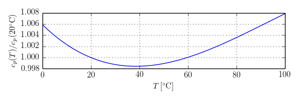

Package with model for liquid water with constant density
This medium package models liquid water.
The mass density is computed using a constant value of 995.586 kg/s. For a medium model in which the density is a function of temperature, use Buildings.Media.Specialized.Water.TemperatureDependentDensity which may have considerably higher computing time.
For the specific heat capacities at constant pressure and at constant volume, a constant value of 4184 J/(kg K), which corresponds to 20°C is used. The figure below shows the relative error of the specific heat capacity that is introduced by this simplification.

The enthalpy is computed using the convention that h=0 if T=0 °C.
Density, specific heat capacity, thermal conductivity and viscosity are constant. Water is modeled as an incompressible liquid. There are no phase changes.
Extends from Modelica.Media.Water.ConstantPropertyLiquidWater (Water: Simple liquid water medium (incompressible, constant data)), Modelica.Icons.Package (Icon for standard packages).
| Name | Description |
|---|---|
| Thermodynamic state variables | |
| BaseProperties | Base properties |
| Return the specific enthalpy of liquid | |
| Inherited | |
| simpleWaterConstants | |
| cp_const | Constant specific heat capacity at constant pressure |
| cv_const | Constant specific heat capacity at constant volume |
| d_const | Constant density |
| eta_const | Constant dynamic viscosity |
| lambda_const | Constant thermal conductivity |
| a_const | Constant velocity of sound |
| T_min | Minimum temperature valid for medium model |
| T_max | Maximum temperature valid for medium model |
| T0=reference_T | Zero enthalpy temperature |
| MM_const | Molar mass |
| fluidConstants | Fluid constants |
| Return thermodynamic state from p, T, and X or Xi | |
| Return thermodynamic state from p, h, and X or Xi | |
| Return thermodynamic state from p, s, and X or Xi | |
| Return thermodynamic state from d, T, and X or Xi | |
| Return thermodynamic state so that it smoothly approximates: if x > 0 then state_a else state_b | |
| Return dynamic viscosity | |
| Return thermal conductivity | |
| Return pressure | |
| Return temperature | |
| Return density | |
| Return specific enthalpy | |
| Return specific heat capacity at constant pressure | |
| Return specific heat capacity at constant volume | |
| Return isentropic exponent | |
| Return velocity of sound | |
| Return specific enthalpy from p, T, and X or Xi | |
| Return temperature from p, h, and X or Xi | |
| Return density from p, h, and X or Xi | |
| Return specific internal energy | |
| Return specific entropy | |
| Return specific Gibbs energy | |
| Return specific Helmholtz energy | |
| Return isentropic enthalpy | |
| Returns overall the isobaric expansion coefficient beta | |
| Returns overall the isothermal compressibility factor | |
| Returns the partial derivative of density with respect to pressure at constant temperature | |
| Returns the partial derivative of density with respect to temperature at constant pressure | |
| Returns the partial derivative of density with respect to mass fractions at constant pressure and temperature | |
| Return the molar mass of the medium | |
| Return thermodynamic state from p and T | |
| Return thermodynamic state from p and h | |
| Return thermodynamic state from p and s | |
| Return thermodynamic state from d and T | |
| Return density from p and h | |
| Return temperature from p and h | |
| Return pressure from d and T | |
| Return specific enthalpy from d and T | |
| Return specific enthalpy from p and s | |
| Return temperature from p and s | |
| Return density from p and s | |
| Return specific enthalpy from p and T | |
| Return density from p and T | |
| ThermoStates | Enumeration type for independent variables |
| mediumName="unusablePartialMedium" | Name of the medium |
| substanceNames={mediumName} | Names of the mixture substances. Set substanceNames={mediumName} if only one substance. |
| extraPropertiesNames=fill("", 0) | Names of the additional (extra) transported properties. Set extraPropertiesNames=fill("",0) if unused |
| singleState | = true, if u and d are not a function of pressure |
| reducedX=true | = true if medium contains the equation sum(X) = 1.0; set reducedX=true if only one substance (see docu for details) |
| fixedX=false | = true if medium contains the equation X = reference_X |
| reference_p=101325 | Reference pressure of Medium: default 1 atmosphere |
| reference_T=298.15 | Reference temperature of Medium: default 25 deg Celsius |
| reference_X=fill(1/nX, nX) | Default mass fractions of medium |
| p_default=101325 | Default value for pressure of medium (for initialization) |
| T_default=Modelica.SIunits.Conversions.from_degC(20) | Default value for temperature of medium (for initialization) |
| h_default=specificEnthalpy_pTX(p_default, T_default, X_default) | Default value for specific enthalpy of medium (for initialization) |
| X_default=reference_X | Default value for mass fractions of medium (for initialization) |
| nS=size(substanceNames, 1) | Number of substances |
| nX=nS | Number of mass fractions |
| nXi=if fixedX then 0 else if reducedX then nS - 1 else nS | Number of structurally independent mass fractions (see docu for details) |
| nC=size(extraPropertiesNames, 1) | Number of extra (outside of standard mass-balance) transported properties |
| C_nominal=1.0e-6*ones(nC) | Default for the nominal values for the extra properties |
| Critical, triple, molecular and other standard data of fluid | |
| Return the Prandtl number | |
| Alias for deprecated name | |
| Alias for deprecated name | |
| Alias for isobaricExpansionCoefficient for user convenience | |
| Alias of isothermalCompressibility for user convenience | |
| Return density derivative w.r.t. pressure at const specific enthalpy | |
| Return density derivative w.r.t. specific enthalpy at constant pressure | |
| Return specific enthalpy from p, T, and X or Xi | |
| Return density from p, T, and X or Xi | |
| Return temperature from p,s, and X or Xi | |
| Return density from p, s, and X or Xi | |
| Return specific enthalpy from p, s, and X or Xi | |
| MassFlowRate | Type for mass flow rate with medium specific attributes |
| AbsolutePressure | Type for absolute pressure with medium specific attributes |
| Density | Type for density with medium specific attributes |
| DynamicViscosity | Type for dynamic viscosity with medium specific attributes |
| EnthalpyFlowRate | Type for enthalpy flow rate with medium specific attributes |
| MassFraction | Type for mass fraction with medium specific attributes |
| MoleFraction | Type for mole fraction with medium specific attributes |
| MolarMass | Type for molar mass with medium specific attributes |
| MolarVolume | Type for molar volume with medium specific attributes |
| IsentropicExponent | Type for isentropic exponent with medium specific attributes |
| SpecificEnergy | Type for specific energy with medium specific attributes |
| SpecificInternalEnergy | Type for specific internal energy with medium specific attributes |
| SpecificEnthalpy | Type for specific enthalpy with medium specific attributes |
| SpecificEntropy | Type for specific entropy with medium specific attributes |
| SpecificHeatCapacity | Type for specific heat capacity with medium specific attributes |
| SurfaceTension | Type for surface tension with medium specific attributes |
| Temperature | Type for temperature with medium specific attributes |
| ThermalConductivity | Type for thermal conductivity with medium specific attributes |
| PrandtlNumber | Type for Prandtl number with medium specific attributes |
| VelocityOfSound | Type for velocity of sound with medium specific attributes |
| ExtraProperty | Type for unspecified, mass-specific property transported by flow |
| CumulativeExtraProperty | Type for conserved integral of unspecified, mass specific property |
| ExtraPropertyFlowRate | Type for flow rate of unspecified, mass-specific property |
| IsobaricExpansionCoefficient | Type for isobaric expansion coefficient with medium specific attributes |
| DipoleMoment | Type for dipole moment with medium specific attributes |
| DerDensityByPressure | Type for partial derivative of density with respect to pressure with medium specific attributes |
| DerDensityByEnthalpy | Type for partial derivative of density with respect to enthalpy with medium specific attributes |
| DerEnthalpyByPressure | Type for partial derivative of enthalpy with respect to pressure with medium specific attributes |
| DerDensityByTemperature | Type for partial derivative of density with respect to temperature with medium specific attributes |
| DerTemperatureByPressure | Type for partial derivative of temperature with respect to pressure with medium specific attributes |
| Saturation properties of two phase medium | |
| Validity limits for fluid model | |
| FixedPhase | Phase of the fluid: 1 for 1-phase, 2 for two-phase, 0 for not known, e.g., interactive use |
| The most basic version of a record used in several degrees of detail | |
| The ideal gas version of a record used in several degrees of detail | |
| The two phase fluid version of a record used in several degrees of detail | |
 Buildings.Media.Water.ThermodynamicState
Buildings.Media.Water.ThermodynamicStateThermodynamic state variables
Extends from (Thermodynamic state).
Base properties
This base properties model is identical to
Modelica.Media.Water.ConstantPropertyLiquidWater,
except that the equation
u = cv_const*(T - reference_T)
has been replaced by u=h because
cp_const=cv_const.
| Type | Name | Default | Description |
|---|---|---|---|
| Advanced | |||
| Boolean | preferredMediumStates | true | = true if StateSelect.prefer shall be used for the independent property variables of the medium |
 Buildings.Media.Water.enthalpyOfLiquid
Buildings.Media.Water.enthalpyOfLiquidReturn the specific enthalpy of liquid
Enthalpy of the water.
Extends from Modelica.Icons.Function (Icon for functions).
| Type | Name | Default | Description |
|---|---|---|---|
| Temperature | T | Temperature [K] |
| Type | Name | Description |
|---|---|---|
| SpecificEnthalpy | h | Specific enthalpy [J/kg] |
Pressure as input signal connector
Mass fraction as input signal connector
Specific enthalpy as input signal connector